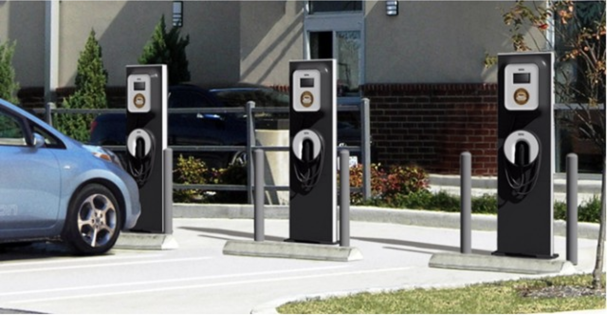

IT Technologies
Aliquam ut ex ut interdum donec amet imperdiet eleifend
Autonomous Vehicles
What does it do?
Autonomous vehicles also known as self-driving cars is a vehiclethat is capable of sensing movement in its surrounds and move
around with little or no human input. The stage that this technology
is currently at, allows individuals with smart cars to turn on a
self-driving feature that controls the car with the use of advanced
technology. The car is fully capable of turning lanes, accelerating
and braking all without human input.
near future as this technology progresses hopefully these vehicles
are fully capable of self-driving without the presence of a driver
in the front seat observing to make sure there are no complications
in their system. Autonomous vehicles are fairly new and they are
already capable of doing very complex things, this just shows that
in the future the advances that will take place will change the way
people go on with their day to day lives.
What is the likely impact?
With the increase in production of self-driving cars, this means that
more and more people will be relying less on petrol as self-driving
cars are run from electricity. This can create some very positive
impacts on the environment. We all know that one day there isn’t
going to be enough oil left in the world to run our cars but the
sooner more people start transitioning from oil run cars to electrical
self-driving cars, the remaining oil can be used for other very crucial
things in life that NEED oil to function. Another significant impact
would be the decrease in the number of car crashes.If every car on the roads was programmed the same then the likelihood of them crashing would be very slim as they wouldn’t speed through red lights or swerve off the road.They would all be able to identify each other and other objects around them, making it less likely to crash. Petrol stations would be changed into charging stations as self-driving cars don’t require fuel. People who would be most affected would be those that don’t understand how self-driving cars work, their transition would be much more difficult compared
to those who are excited to be able to finally get a self-driving car.
This would be due to their fear and reliance on their car to drive
itself. Autonomous vehicles have the possibility to replace uber
drivers and taxi jobs as they would no longer need someone there
to drive them. This wouldn’t be until at least 10 years because the
current technology involved needs someone to still be sitting in the
driver's seat just to be safe in case of any malfunctions.
How will this affect you?
In the future I am hoping to purchase a self-driving car for myself as I think they will be programmed much better than what they are now and therefore become much more reliable than humans driving. My family is also very involved with technology so I believe we will all have self-driving cars, this would make it easier for us to charge our cars if we all had docking stations in our garages. In regards to my everyday life, it would give me anxiety knowing that I have to not only charge my phone everyday but my car too. I would constantly be scared that the battery would go flat or forget to charge it the night before, but by the time I get my very own self-driving car I believe the technology in regards to the way they are charged would be much more developed than it is now. Additionally, I would have full trust in the technology used to program these autonomous vehicles and know that they will be able to take me from A to B safely.
Cybersecurity
What does it do?
Cybersecurity is a type of protection that protects any hardware, software and data from cyber attacks like being hacked, and viruses. Its focus is to secure components that are undefended and systems that can be potentially be at risks. It is the practice of guarding someone’s information, installing firewalls, and guarding an organization’s files and their network. People who work in this profession would be responsible for identifying a problem and should provide a solution right away. Since technology have been evolving every year, there are a number of new aspects in Cybersecurity that has helped people with their issues about the security of their data that they share on the internet like PCI DSS, Critical Security Controls, NIST framework, and ISO. PCI DSS is the payment card industry security standards, it is a type of security in which they protect credit card, debit card and cash card transactions. Critical Security Controls is a type of cyber protection that gives approaches on how to stop attacks. NIST Framework is a framework that helps improve the readiness of an organisation on managing cyber risks. On the other hand, ISO gives recommendation on information security management. In the future because of the number of security breaches that happened recently, there could be a massive improvement on how each platform secure their data and would potentially lower the number of security breach. In the coming years, majority of the people will rely on storing their data online and the traditional way of storing data would slowly diminish. Because of this, their data would surely be at risk at being hacked as the number of skilled hackers keeps getting higher every year. There would be a purely software defined approach to security. This would enable to embed security to any software which will be fast. Some of technological developments that make Cybersecurity possible are Hardware authentication, encryption, tokenization, and the cloud.
What is the likely impact?
These developments made a huge impact in the IT industry as the cyber attacks gets bigger every year, the protection should be improved every year as well. User-behaviour analytics is a type of technology that can trigger a red flag to the defending system if the employers are breaching someone else’s account. Encryption and tokenization benefited a lot of enterprises as it helped protect data down to field and subfield. Which indicates that data is secure when moved and used to other enterprises. What is most likely to change with Cybersecurity is that it will no longer just be the protection of sensitive data and keeping hackers away. Because of the big issue regarding the Marriott and Starwood customers, security in IT would likely would be needing an improvement. Security in IT would also cover the cooperation of data which will potentially lead to business opportunities. This will enable organizations to collaborate on data without breaching privacy, giving up intellectual property or misuse of their data. The people who would mostly be impacted by these developments would be organizations and businesses because of the recent data breach issue, there would be a huge advancement in security to avoid another privacy breach. Due to this, there would be new technology and softwares that would be created to add further protection and Cybersecurity would be a job that would be in demand in now and in the future. There would be a high demand in security that would potentially acquire employees that will hopefully create a more enhanced security.
How will this affect you?
In my daily life, I mostly use my devices to store my information and also online. I would feel secure knowing that security in IT will be further developed to protect everyone’s data that they input online. I also input sensitive information such as my debit card information when ordering online and knowing how everything i put online would be potentially taken by hackers is alarming. However, with the works on more protection from cyber attacks, this would make me feel more secure that my data would be not used or get taken through hackers online. The effect that it will have to my family and friends would be the same as It would affect myself. My family and friends also rely mostly online to store their information and always input their information online when creating accounts and accessing their debit card details online. This would benefit them as they would also feel safe from potential privacy breach that would lead to their information being illegally used against their will.
Clouds, services, servers
What does it do?
Cloud servers are essentially infrastructures in a cloud service
model. It is a server that is built, where it is delivered through a
cloud computing server over the internet. It is an on demand
self service environment where storing and transferring and
sharing is being done. The very interesting part of cloud servers
is that there is no need for much hardware to run, since it is
simply done online. Companies such as Google and Microsoft has cloud environments such as Google Drive and OneDrive where users may store data and/or share. Cloud servers and services are advancing every day and new technologies are progressing forward, by integrating platform devices with the cloud with the help of a server. Before this advancement took place, there used to be raw core services where users compute, storage and network data. This advancement also affects the tech teams of the IT industry as well, since most IT tech teams are not specialists but are forced to become experts in cloud services and invest in
Companies such as Google and Microsoft has cloud environments such as Google Drive and OneDrive where users may store data and/or share. Cloud servers and services are advancing every day and new technologies are progressing forward, by integrating platform devices with the cloud with the help of a server. Before this advancement took place, there used to be raw core services where users compute, storage and network data. This advancement also affects the tech teams of the IT industry as well, since most IT tech teams are not specialists but are forced to become experts in cloud services and invest in
equipment that work best with and/or for the cloud as well as
considering the optimisation of cost and benefits that come from
it being able to create, use assist on creating a better cloud
environment. In the next 3 years, the IT industry would be adopting
the concepts of cloud computing and cloud servers to store and
access data; all purely done online instead of using hard drives.
What is the likely impact?
The impacts of the development of cloud servers, services and
cloud computing would improve and advance in complexity. In a
way, cloud computing would also become more simple, meaning
it will be easier to use. It will also open doors for opportunities
and capabilities for their users. It would impact people by creating
jobs and also other aspects, such as services, applications, platforms etc. Service providers and vendors would use cloud computing and cloud servers to develop new and innovative ways to design and create new platforms and organise; as well as storing, accessing and sharing data. It would also affect businesses as it would help them conduct them easier and make it more affordable to run. It is expansive and powerful technology which can be beneficial in an individual’s life as well as a business/group. The accessibility and agility of a cloud is better than the current technology that is used, mostly because of its flexibility of being able to be portable and accessed at any time and place, for the purpose of sharing and/or doing work. It is a cost-effective alternative that is perfect for all individuals and
companies.
How will this affect you?
In my daily life, cloud computing, servers and services would benefit and affect me in mostly positive ways. One advantage that I will be able to obtain from using the cloud is having an increased amount of flexibility, which would be beneficial for businesses which are growing and for being able to use the cloud for whatever and whenever it is needed. Another advantage of cloud computing which would affect me, is it’s ability to increase collaboration for either work, school etc. Peers, teams and groups can access, edit and share documents from anywhere at anytime. These updates are taken in real time and fully displays collaboration. This would be able to be used in work, school, university etc. by anyone and everyone, as using a cloud server would promote ease of use for any user and create a safe environment where all files and other data can be stored safely without any harm done to them. This will affect my family members and friends by being able to store, create, share and edit documents and be able to collaborate or edit work that needs to be edited. This will provide a trouble-free way to do so.
Robots
What does it do?
Robots are becoming a growing revelation in today's modern society, with the advances in technology becoming more increasingly accessible and recognisable. Many run on a manufactured AI (Artificial Intelligence) which is a simulation of human knowledge and skills by a robot, machine or computing system, intended to assist us with a huge variety of different purposes, whether it be for practical reasons to assist with certain scenarios or just for entertainment purposes. They can be designed to perform certain movements and actions automatically or manually through the input of human interaction. There are robots which are created today in the intention to perform labour work which would normally be too difficult for a human to perform on a regular basis. A scenario of this are when robots are used to perform surgery on a patient due to the process of the surgery being too delicate for the surgeon's hands to undertake, which relieves a lot of the pressure for humans. Another scenario is robots which are used by the military to undertake situations without putting or minimising the human life at a risk through neutralizing and observing dangerous situations with the control and guidance of human/s. Additionally, many of the cars driven everyday are in fact also manufactured with robots or with the assistance of it. Machines are created to help assemble and align the different features and parts of a vehicle together and welding of parts using mechanical arms which saves much of the heavy labour. Not only is this very time and cost efficient, but it also makes the tasks more safe for workers as it reduces the amount of dangerous tasks for humans. Robots are also extremely advantageous in allowing us to discover new things about our world and universe, continually pushing the boundaries and possibilities through its use of underwater and space exploration. They allow us to reach and see places which isn't humanly possible through the use of durable high-definition cameras and user-input controlled movement in order to gather new research, data and discoveries. An example of an everyday robot which is used commonly in many households today include the robot vacuums which are designed to automatically vacuum and clean the house without needing any physical interaction with the device itself to complete its job. They work through the integration of sensors onto the device which are able to detect and respond to its surroundings in order to avoid obstacles and keep track of its movements and the area it has covered. Some higher end models of robot vacuums uses mapping technology to allow the device to familiarise itself with the household gradually over time through a digital camera which takes pictures and a laser range finder to detect the distance of different furniture and construction of rooms. Using the information it gathers, it gradually forms a map internally, allowing it to be more effective and efficient when moving across the different rooms as it is able recognise where it has already been and where it needs to go to finish completing its purpose. The physical construction of the device is crucial to its ability to function as its smaller design allows it to easily reach and fit into places which would be more difficult for a person to do so. There are plans in upcoming years for robots to become integrated as an education tool, where they are able to assist teachers in classrooms to fill the needs and capacity that the teacher may not have, such as personalised learning with each student individually through naturally connecting, speaking, listening and communicating with them. The funding and support for the vision that robots can have in our modern society has increased.
What is the likely impact?
The potential impact that the implementation of robots in our modern society is limitless, as there are new innovations and ideas formed every day. As stated previously, the impacts that they can have are largely beneficial for us humans in make life easier for us in general and improving our quality of life, however there is the also the impact in which robots can also easily replace us in the coming future generations. What is meant by this is that since they are intended to make life easier for us, the actual demand for humans to complete the same task will be impacted, meaning the potential of less jobs within that area of work due to humans not being needed as robots are able to do so in an economic and efficient manner. There is research from McKinsey Digital stating they have found that 45% of current jobs can be automated. This can be a problem as it can mean more people become jobless, increasing the unemployment rate and causing the rich to get even richer as businesses and companies are required to pay less wages. On the bright side, there will be more jobs in the profession of manufacturing these robots. Jobs like truck drivers and transport drivers may not be required in the near future as the autonomous vehicle technology is currently being developed and used, as well as many retail and customer interaction occupations are being impacted through the development of new systems such as self service kiosks in McDonalds restaurants and the testing of cashier-less grocery stores by Amazon and the use of robots in manufacturing as already shown it’s impact, with America having 5 million fewer jobs in manufacturing in 2018 compared to the year 2000, with the reasons pointing to the use of these robots.
How will this affect you?
I believe that using robots will affect my daily life in a positive manner personally, with the creation and development of new robots to greater potential will improve my quality of life. An example of a robot that I use on the occasionally is Siri on my iPhone, an artificial intelligence which I can talk to in order to check the weather today or tomorrow or to quickly make a phone call to a family or friend, however I only ever use this at home as I don’t really want to talk out loud in public to my phone. When going out, I find myself using the kiosks at restaurants (such as McDonalds) much easier than ordering at the cashier, as I can personalise what I’m ordering to how I would prefer and can see the total costs beforehand and I am able to take my time where as it would be more difficult at the cashier. It is also beneficial as I can also skip a queue when ordering through a kiosk. The implementation of robots will most likely change the way I live in the coming years but in a more positive manner, as the use of robots is intended to be beneficial for the consumers. Having concepts of robots for safety purposes will allow me to feel more comfortable and reassured knowing that human lives are being protected and conserved and robots for discovery purposes will allow me to learn more about the world that we live in. However the impact on of my family and friends may vary, as some may be in the same boat as me with the outlook of positivity on the changes, however some are involved with industries such as manufacturing and engineering and may be or feel concerned that their occupation and job are at a risk in the coming years.